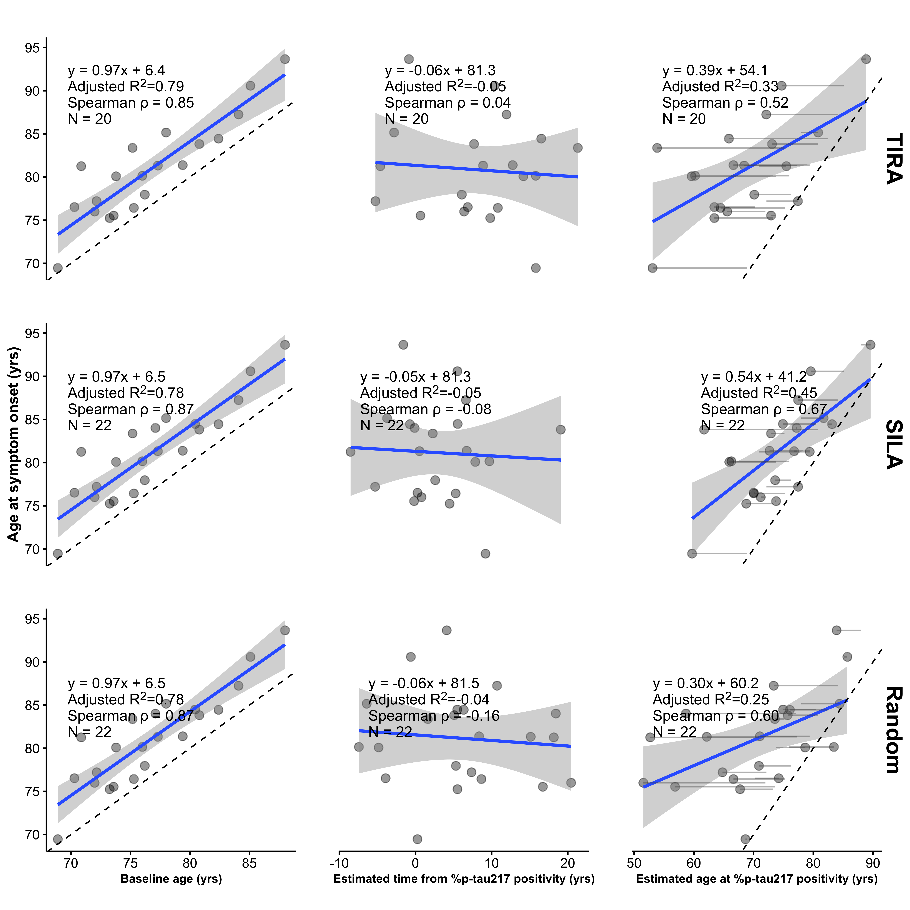
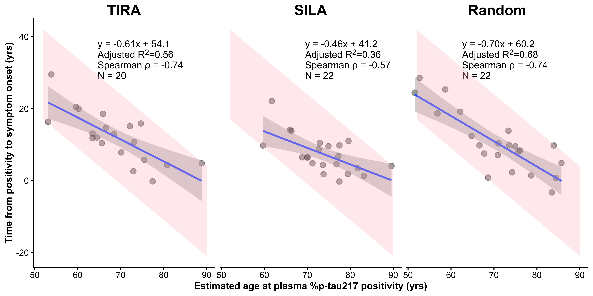

Source files are available on GitHub
Plasma markers of phosphorylated tau-217 (such as %p-tau217) have rapidly emerged as robust markers of underlying Alzheimer’s Disease (AD) pathology.1 Building on this excitement, recent work has focused on longitudinal measurements of plasma p-tau217, with this work suggesting significant change over time in at risk groups,2 although with milder associations with concurrent cognitive changes.3
The article by Petersen et al.4 expands in this direction by applying disease clock models (Sampled Iterative Local Approximation [SILA]5 and Temporal Integration of Rate Accumulation [TIRA]6) to derive estimates of the age at plasma %p-tau217 positivity, based on estimation of group-level accumulation combined with individual level %p-tau217 magnitude. This measure of age at %p-tau217 positivity, defined as baseline age minus the estimated time from %p-tau217 positivity is then used to claim prediction of the age at onset of symptomatic (AD). We show that this apparent predictive performance is largely artifactual, arising from two structural features of the analysis: (1) restriction to individuals who progressed to symptomatic AD during limited follow-up, which induces a strong artifactual association between baseline age and age at symptom onset, and (2) the use of constructed predictors and outcomes that share age and timing components, making the resulting associations partly self-referential. More generally, this artifact arises when the outcome is constrained by an earlier time variable and the predictor contains that same or a related time component, inducing associations through shared structure rather than independent signal. Using digitized data from the published figures, we decomposed the clock-derived measure into baseline age and estimated time from plasma %p-tau217 positivity, quantified shared and unique explained variance using commonality analysis, and evaluated a null scenario by replacing the biomarker component of the clock measure with a randomly generated time from %p-tau217 positivity, drawn over the observed range. This randomization preserves the range of the predictor while removing any biomarker information, allowing the contribution of structural relationships to be assessed directly. In ADNI, baseline age alone explained substantially more variance in age at symptom onset than the reported plasma %p-tau217 clock-derived predictors (\(R^2\approx0.78\) versus \(0.337\) and \(0.470\) for TIRA and SILA), the estimated time from %p-tau217 component contributed little additional information, and randomly generated values produced a similar associations to baseline age alone (\(R^2\approx0.79\)). These results indicate that the reported predictive performance of the plasma %p-tau217 clock is driven largely by structural age relationships rather than independent biomarker information.
The primary analysis links estimated age at %p-tau217 positivity to observed age at symptom onset in known progressors and forms a central results of the paper. However, this analysis evaluates when progression occurs in individuals who progress within a limited follow-up window—a substantially less clinically relevant problem than predicting onset in an all-comers population, which represents a key goal in the field. In the restricted sample, baseline age must precede age at symptom onset, and the interval between them is bounded by the observation period of the study. As a result, baseline age alone strongly predicts age at symptom onset, even in the absence of biomarker information.
This structure carries directly into the clock-based analysis, where age at symptom onset is regressed on estimated age at %p-tau217 positivity. Because the plasma %p-tau217 clock combines baseline age with an estimated timing component, and the outcome is itself constrained by baseline age, the resulting association reflects a mixture of structural age relationships and any true biomarker signal. To separate these components, the clock can be decomposed into baseline age and estimated time from %p-tau217 positivity, and age at symptom onset modeled as a function of both terms, allowing the independent contribution of the biomarker timing component to be assessed.
In their Alzforum response to this critique,7 the authors confirmed that in ADNI, baseline age alone predicts age at symptom onset with an \(R^2\) of approximately 0.78 (Figure 1, left panels). The pink regions in Figure 1 depict the structural dependence that arises given that observed symptom onset occurs at most 10.4 years after baseline. In contrast to baseline age, the estimated age of %p-tau217 positivity achieves substantially lower \(R^2\) values (0.337 and 0.470 for TIRA and SILA, respectively; Figure 4 in Petersen et al.4 and Figure 1, right panels). Thus, incorporating the biomarker-derived estimate of time from %p-tau217 positivity does not improve explained variance relative to baseline age alone and, in fact, reduces it. Consistent with this, the estimated time from %p-tau217 positivity shows little association with age at symptom onset, and adding it to baseline age does not improve model fit (Figure 1). Patterns obtained using a randomly generated time from %p-tau217 positivity, drawn uniformly over the observed range, are qualitatively similar to those obtained using the SILA and TIRA estimates (Figure 1, bottom).
To further quantify these relationships, Table 1 presents a commonality analysis8 partitioning the unique and shared variance between baseline age and the estimated age of %p-tau217 positivity (via SILA, TIRA, or the random comparator) as predictors of age at symptom onset. While a substantial proportion of explained variance is shared between predictors (50% for SILA; 42% for TIRA; 36% for random), the unique contributions differ markedly. Baseline age independently accounts for a large proportion of the variance (44% for SILA; 56% for TIRA; 64% for random), whereas the estimated age of %p-tau217 positivity contributes minimally (6% for SILA; 3% for TIRA; 0.07% for random). These results indicate that nearly all explained variance is either shared with or uniquely attributable to baseline age, with little additional contribution, only 3% to 6%, from the biomarker-derived timing component.
The authors have also highlighted analyses that exclude age from the outcome. However, this does not remove the structural issue; rather, it shifts the source of the constraint from baseline age to age at %p-tau217 positivity. In Supplementary Figure 6, the analysis is framed as regressing time from %p-tau217 positivity to symptom onset on the estimated age at %p-tau217 positivity. The quantity that induces the artifact depends on how the outcome is defined. When the outcome is age at symptom onset, it is constrained by baseline age, and baseline age therefore induces the structural association, as shown above. If the outcome is instead the time from %p-tau217 positivity to symptom onset (i.e., duration of %p-tau217 positivity), then the constraint shifts to age at %p-tau217 positivity. Consider someone who becomes %p-tau217 positive at age 90: their duration of %p-tau217 positivity cannot be 15 years, since this would imply an age of 105, which is not observed in the data. Similarly, someone who becomes %p-tau217 positive at age 60 cannot have very short durations, since symptom onset must occur at the observed age range of the cohort. Thus, age at p-tau positivity tightly constrains the possible values of duration, and regressing duration on age at %p-tau217 positivity induces a strong negative association, with older ages at positivity associated with shorter durations, even in the absence of a true underlying relationship. This is the same structural mechanism described above, now operating through age at %p-tau217 positivity rather than baseline age.
In our analysis (Figure 2), when the estimated age of %p-tau217 positivity is replaced with age at baseline minus the randomly generated time from %p-tau217 positivity, the \(R^2\) increases from 0.57 (TIRA) or 0.39 (SILA) to 0.68 (random). This shows that the magnitude of the association in Supplementary Fig. 6 can be reproduced using a predictor that contains no biomarker information, indicating that the observed relationship is driven by the structural dependence of the outcome on the predictor, rather than by the clock-estimated time to %p-tau217 positivity. This structural dependence is represented by the pink regions which show where the data must lie given that the observed ages of symptom onset occur between 69 to 94 years.
SILA | TIRA | Random | ||||
|---|---|---|---|---|---|---|
Effect |
| % Total |
| % Total |
| % Total |
Unique to baseline age | 0.37 | 43.78 | 0.46 | 55.75 | 0.51 | 64.37 |
Unique to age of %p-tau217 positivity | 0.05 | 6.07 | 0.02 | 2.63 | 0.00 | 0.07 |
Common to both | 0.42 | 50.15 | 0.34 | 41.62 | 0.28 | 35.56 |
Total | 0.84 | 100.00 | 0.82 | 100.00 | 0.79 | 100.00 |
Adj. | 0.83 | 0.80 | 0.77 | |||
The survival analyses, and in particular the event time summaries shown in Petersen et al Figure 3b, reflect the same structural issue described above for the duration analysis in Supplementary Figure 6. These summaries are derived from the survival analysis and compare time from %p-tau217 positivity to symptom onset across groups defined by age at %p-tau217 positivity, making them a grouped version of the same duration outcome. Although the full survival analysis includes nonprogressors, the relationship between age at %p-tau217 positivity and time to symptom onset remains subject to the same structural constraints. Individuals who become %p-tau217 positive at older ages necessarily have less remaining observable time before symptom onset, censoring, and competing risks, including death. As a result, duration from %p-tau217 positivity to onset is inherently constrained by %p-tau217 age at positivity. Thus, just as in the duration regression, analyses that summarize time from %p-tau217 positivity to symptom onset as a function of age at %p-tau217 positivity embed this constraint, and shorter observed durations at older ages arise from these structural limits rather than from differences in disease progression.
Taken together, these analyses demonstrate that combining baseline age with estimated time from %p-tau217 positivity into a single predictor, and plugging it into second-stage analyses of progression within limited follow-up, induces structural dependencies in the data. The resulting associations reflect a mixture of shared age components from constructed variables, bounded follow-up, and structural constraints. Consistent with this, we find that the clock-derived formulation of time from %p-tau217 positivity contributes little independent information in these analyses. This limited contribution likely reflects, in part, the strong modeling assumption that individuals follow a common accumulation trajectory, such that time from %p-tau217 positivity can be inferred from a group-level mean trajectory given a single observation. Under this assumption, variation in individual trajectories is minimized, reducing the potential for the estimated timing component to provide additional predictive value. These structural features, including shared age components, bounded follow up, and constructed variables can produce strong and apparently meaningful relationships even in the absence of biomarker timing information, masking the underlying artifacts and giving the appearance of predictive performance that does not generalize beyond the constrained setting in which it is evaluated. Importantly, these structural issues are not unique to plasma p-tau217 clock models, but are also present in prior work applying similar frameworks to estimate age at amyloid positivity from amyloid PET and relating this quantity to age at symptom onset, as illustrated in Figure 3 in Schindler et al.,6 where the same combination of constructed predictors, shared age components, and restricted follow-up can induce analogous artifacts. Analyses using disease-time “clock” models with these structural features are becoming increasingly common, underscoring the importance of carefully evaluating their statistical properties.10
These methodological objections are not intended to dismiss the significance of plasma p-tau217 as a predictor. Indeed, we and others have found it to be a robust predictor of cognitive decline in cognitively unimpaired populations. These analyses have yielded more modest effect sizes, indicating that plasma p-tau217 is associated with subsequent cognitive decline, but with limited precision at the individual level, especially when incorporating plasma p-tau217 changes over time.3 In this same sample of \(N=1,629\) cognitively unimpaired (median follow-up six years), a model incorporating baseline p-tau217, hippocampal atrophy, amyloid PET, APOE \(\epsilon4\) status, and demographics achieved a cross-validated area under the precision–recall curve (AUPRC) of approximately 70% for discriminating clinical decline from stability.11
Notably, 77% of the 1,629 cognitively unimpaired individuals in this cohort remained cognitively stable throughout follow-up. While accuracy metrics can be inflated by focusing only on individuals who decline (a small minority) and ignoring the stable majority, such an approach does not reflect the clinical reality of population screening. Given the clear clinical potential of plasma measures of AD, and the availability of direct-to-consumer p-tau217 measurements, it is critical that scientific research evaluating these tools portrays an accurate representation of what these measurements can and cannot provide. Rather than assuming that all individuals are on a common declining trajectory, the latent class approach we employed explicitly estimates the probability that an individual will be a progressor.12 It is clinically imperative to convey the degree of certainty regarding an individual’s trajectory before counseling them on their “clock” under an unsupported assumption of inevitable decline.

Data and code availability
To reproduce these analyses, see data and code at GitHub: https://github.com/mcdonohue/blog/tree/main/posts/design-artifacts
References
1.
Warmenhoven N, Salvadó G, Janelidze S, et al. A comprehensive head-to-head comparison of key plasma phosphorylated tau 217 biomarker tests. Brain. 2025;148(2):416-431.
2.
Mattsson-Carlgren N, Janelidze S, Palmqvist S, et al. Longitudinal plasma p-tau217 is increased in early stages of Alzheimer’s disease. Brain. 2020;143(11):3234-3241.
3.
Insel PS, Mattsson-Carlgren N, Langford O, et al. Concurrent changes in plasma phosphorylated tau 217, tau PET, and cognition in preclinical Alzheimer disease. JAMA Neurology. 2025;82(10):985-993.
4.
Petersen KK, Milà-Alomà M, Li Y, et al. Predicting onset of symptomatic Alzheimerʼs disease with plasma p-tau217 clocks. Nature Medicine. Published online 2026. doi:10.1038/s41591-026-04206-y
5.
Betthauser TJ, Bilgel M, Koscik RL, et al. Multi-method investigation of factors influencing amyloid onset and impairment in three cohorts. Brain. 2022;145(11):4065-4079.
6.
Schindler SE, Li Y, Buckles VD, et al. Predicting symptom onset in sporadic Alzheimer disease with amyloid PET. Neurology. 2021;97(18):e1823-e1834.
7.
Not if, but when: Blood p-Tau217 clock tells time of AD onset. 2025. https://www.alzforum.org/news/research-news/not-if-when-blood-p-tau217-clock-tells-time-ad-onset#comment-57821
8.
Nimon K, Lewis M, Kane R, Haynes RM. An R package to compute commonality coefficients in the multiple regression case: An introduction to the package and a practical example. Behavior research methods. 2008;40(2):457-466.
9.
Rohatgi A. WebPlotDigitizer. https://automeris.io
10.
Brown CA, Cousins KAQ, Korecka M, et al. Temporal modeling of amyloid and tau trajectories in Alzheimer’s disease using PET and plasma biomarkers. Annals of Neurology. n/a(n/a). doi:https://doi.org/10.1002/ana.78194
11.
Li R, Langford O, Insel PS, et al. Divergent patterns of cognitive decline in preclinical Alzheimer’s disease: Implications for secondary prevention trials. Alzheimer’s & Dementia. Published online In press. doi:10.64898/2025.12.15.25342305
12.
Proust-Lima C, Philipps V, Liquet B. Estimation of extended mixed models using latent classes and latent processes: the R package lcmm. Journal of Statistical Software. 2017;78:1-56.